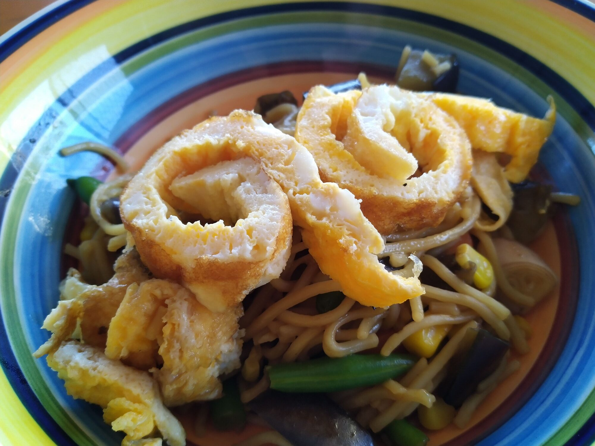

Teriyaki Eggplant Stir-Fry
 Meat
Meat

- 2 tbs olive oil
- 4 eggs, lightly beaten
- 1 large eggplant, cut into 2 cm cubed
- 450g frozen veggie mix
- 1 cup frozen peas
- 450g rice or egg noddles
- 1/3 cup of teriyaki sauce
- 3 spring onions, thinly sliced
- 1 tbs sesame seeds, toasted
Heat oil in pan, add eggs, 2 at a time and cook for 2 mins.
Transfer to plate, when cool enough, roll into a log and thinly slice.
Heat oil in wok, stir-fry egglpant for 5 mins, until golden and tender
Pour boil water over frozen vegetables and leave to stand for 3 mins, then drain
Add drained vegetables, sauce, rice or noodles to stir-fry and stir for 2 mins
Add half the onion, egg to stir-fry
Serve with remaining egg and sesame seeds.